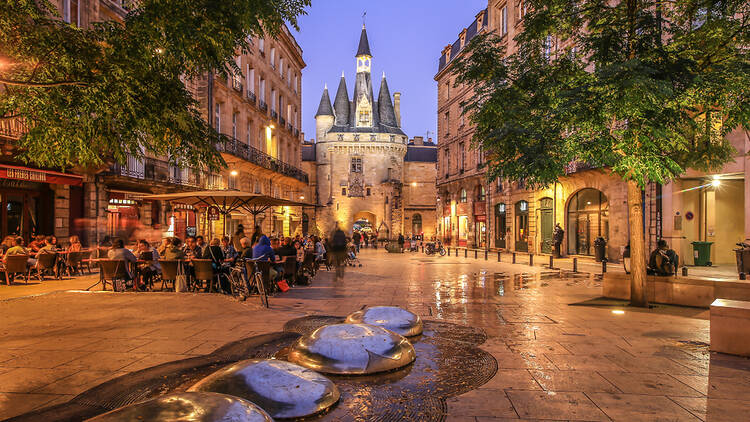
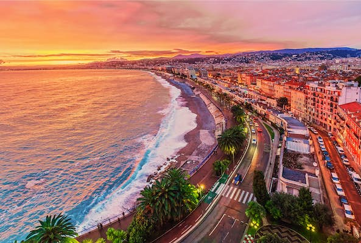
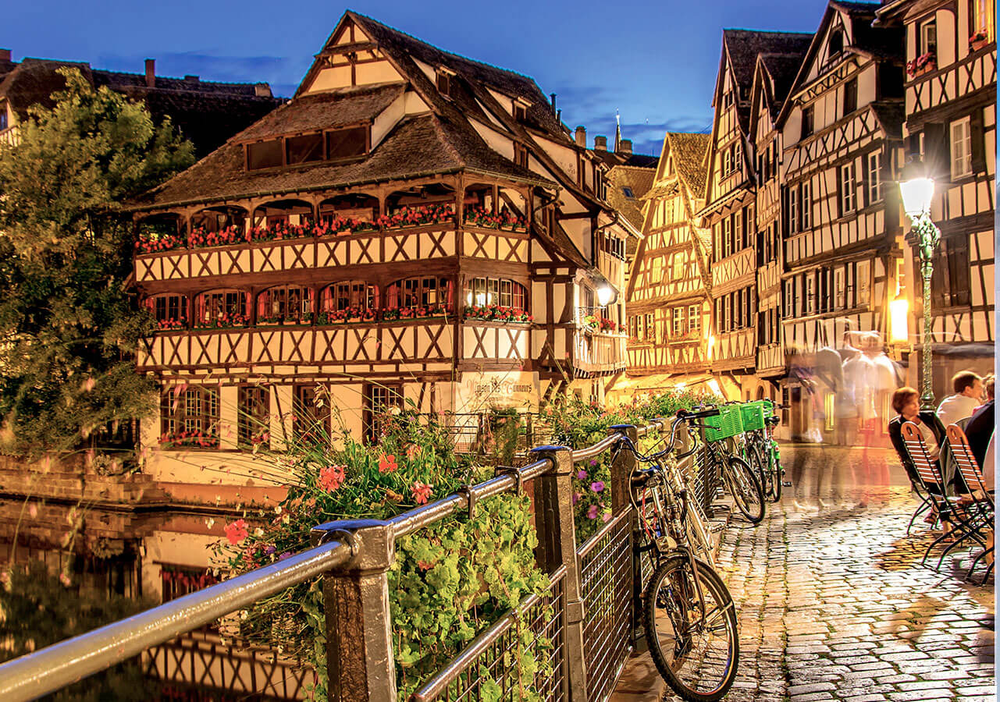

FRANCE
Let's Travel The World!

Paris, la capitale de la France, est une ville imprégnée d’histoire, de culture et de romantisme. Connue sous le nom de "ville de l’amour", elle possède des monuments emblématiques tels que la tour Eiffel, le musée du Louvre et la cathédrale Notre-Dame. Avec ses rues charmantes, sa cuisine de classe mondiale et sa scène artistique dynamique, Paris est un centre mondial de la mode, de l’art et de la gastronomie, captivant les visiteurs par son allure intemporelle.

Bordeaux, une ville du sud-ouest de la France, est bien connue pour ses vins fins, ses bâtiments chargés d’histoire et sa culture animée. Les amateurs de vin et les passionnés d’histoire apprécieront de visiter cette charmante ville sur la Garonne, reconnue comme site du patrimoine mondial de l’UNESCO. Il est connu pour son architecture exquise du XVIIIe siècle, ses rues pittoresques et les vignobles de la célèbre région viticole de Bordeaux.

Nice est une charmante ville balnéaire du sud-est de la France, bien connue pour sa promenade animée, ses magnifiques plages méditerranéennes et ses influences françaises et italiennes bien équilibrées. Nice est une destination touristique populaire dans le monde entier en raison de son beau mélange d’histoire, de culture et de beauté naturelle, ainsi que de son climat confortable et de sa charmante vieille ville.

La charmante ville de Strasbourg, située dans le nord-est de la France, est bien connue pour sa fusion unique d’éléments allemands et français. C’est la capitale de la région Grand Est et elle est bien connue pour le Parlement européen, une magnifique cathédrale gothique et de pittoresques maisons à colombages. La riche histoire, la cuisine variée et l’ambiance alsacienne charmante de Strasbourg en font une destination culturelle singulière.

Lyon, ville historique connue pour sa gastronomie, est nichée sur les rives du Rhône et de la Saône. Les bouchons de la ville servent une délicieuse cuisine française, et sa vieille ville, classée au patrimoine mondial de l’UNESCO, ou Vieux Lyon, abrite de charmants bâtiments Renaissance. Les voyageurs à la recherche d’un mélange de tradition et de contemporain trouveront dans Lyon une destination attrayante en raison de son patrimoine de la soie et de ses festivals annuels, qui mettent en valeur le paysage culturel dynamique de la ville.